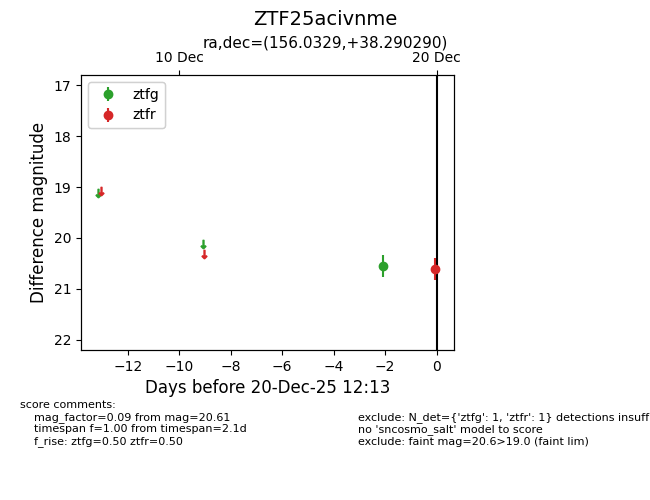
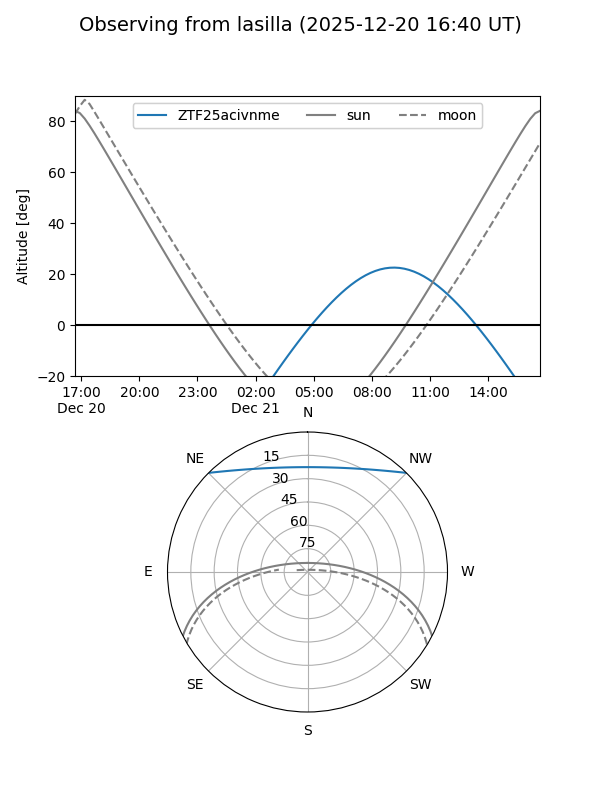
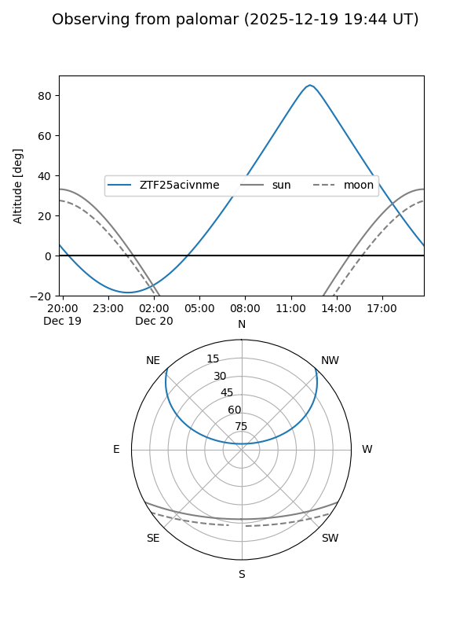

ZTF25acivnme
Target ZTF25acivnme at 2025-12-20 12:14
Aliases and brokers:
FINK: fink-portal.org/ZTF25acivnme
Lasair: lasair-ztf.lsst.ac.uk/objects/ZTF25acivnme
ALeRCE: alerce.online/object/ZTF25acivnme
alt names
ZTF25acivnme (ztf,fink_ztf)
Coordinates:
equatorial (ra, dec) = 156.0329,+38.29029
equatorial (HMS+DMS) = 10:24:07.89,+38:17:25.04
galactic (l, b) = (183.5399,+57.31934)
Flags:
Photometry:
last ztfg=20.55, ztfr=20.61
1 ztfg, 1 ztfr detections
Lightcurve

Visibility


Additional plots